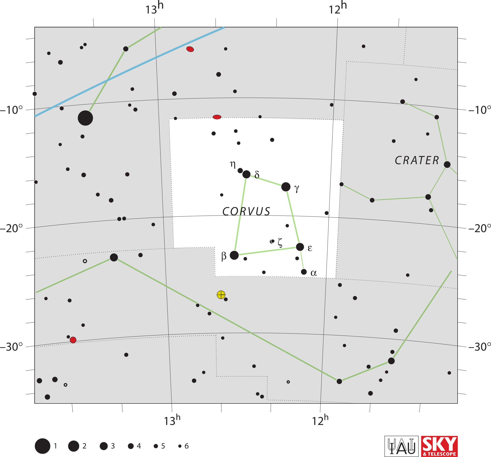

<div data-role="page" id="corvus" data-theme="a">

	<div data-role="header">
		<a href="#home" data-icon="back" data-rel="back">Back</a>
		<h1>Corvus</h1>
		<a href="#home" data-icon="home">Home</a>
	</div>

	<div data-role="content">
		<div class="cssImageMap">
			

			<a href="crater.html" class="constellation" data-side="right"
				data-x="1610" data-y="630" data-width="250" data-height="70"></a>

		</div>

		<div id="here">
			<h2>Corvus</h2>

			<p>Image Credit: IAU and Sky & Telescope magazine (Roger Sinnott
				& Rick Fienberg)
		</div>
	</div>
</div>
